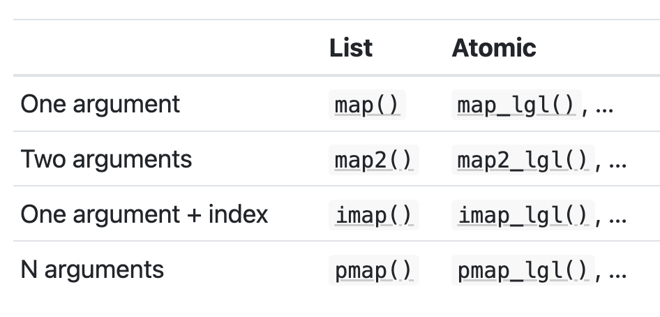

Mapping
September 18, 2024
Agenda 9/18/24
mapping
purrr for functional programming
functionals are functions that take function as input and return a vector / list / data frame as output.
alternatives to loops
a functional is better than a
forloop is better thanwhileis better thanrepeat(in terms of computing efficiency)
Benefits
encourages function logic to be separated from iteration logic
can collapse into vectors/data frames easily
Map
map() has (at least) two arguments, a data object and a function. It performs the function on each element of the data object and returns a list. We can also pass additional arguments into the function.
variations of map_ functions
The map functions are named by they output the produce. For example:
map(.x, .f)is the main mapping function and returns a listmap_dbl(.x, .f)returns a numeric (double) vectormap_chr(.x, .f)returns a character vectormap_lgl(.x, .f)returns a logical vector

Note that the first argument is always the data object and the second object is always the function you want to iteratively apply to each element in the input object.
map() in practice
map() variants (output)
triple <- function(x) x * 3
map(.x = c(1:3), .f = triple)[[1]]
[1] 3
[[2]]
[1] 6
[[3]]
[1] 9map_dbl(.x = c(1:3), .f = triple)[1] 3 6 9map_lgl (.x = c(1:3), .f = triple)Error in `map_lgl()`:
ℹ In index: 1.
Caused by error:
! Can't coerce from a number to a logical.map_lgl(.x = c(1, NA, 3), .f = is.na)[1] FALSE TRUE FALSEfastfood dataset from openintro
library(openintro)
fastfood# A tibble: 515 × 17
restaurant item calories cal_fat total_fat sat_fat trans_fat cholesterol
<chr> <chr> <dbl> <dbl> <dbl> <dbl> <dbl> <dbl>
1 Mcdonalds Artisan … 380 60 7 2 0 95
2 Mcdonalds Single B… 840 410 45 17 1.5 130
3 Mcdonalds Double B… 1130 600 67 27 3 220
4 Mcdonalds Grilled … 750 280 31 10 0.5 155
5 Mcdonalds Crispy B… 920 410 45 12 0.5 120
6 Mcdonalds Big Mac 540 250 28 10 1 80
7 Mcdonalds Cheesebu… 300 100 12 5 0.5 40
8 Mcdonalds Classic … 510 210 24 4 0 65
9 Mcdonalds Double C… 430 190 21 11 1 85
10 Mcdonalds Double Q… 770 400 45 21 2.5 175
# ℹ 505 more rows
# ℹ 9 more variables: sodium <dbl>, total_carb <dbl>, fiber <dbl>, sugar <dbl>,
# protein <dbl>, vit_a <dbl>, vit_c <dbl>, calcium <dbl>, salad <chr>From TidyTuesday Fast food entree data on September 4, 2018.
Anonymous functions and shortcuts
- use
~to set a formula (when the function is neither a single name nor defined byfunction(...) { ...}) - use
.xto reference the inputmap(.x = ..., .f = )
map_dbl(.x = fastfood, .f = function(dog) mean(dog, na.rm = TRUE)) restaurant item calories cal_fat total_fat sat_fat
NA NA 530.9126214 238.8135922 26.5902913 8.1533981
trans_fat cholesterol sodium total_carb fiber sugar
0.4650485 72.4563107 1246.7378641 45.6640777 4.1371769 7.2621359
protein vit_a vit_c calcium salad
27.8910506 18.8571429 20.1704918 24.8524590 NA map_dbl(.x = fastfood, .f = ~mean(.x, na.rm = TRUE)) restaurant item calories cal_fat total_fat sat_fat
NA NA 530.9126214 238.8135922 26.5902913 8.1533981
trans_fat cholesterol sodium total_carb fiber sugar
0.4650485 72.4563107 1246.7378641 45.6640777 4.1371769 7.2621359
protein vit_a vit_c calcium salad
27.8910506 18.8571429 20.1704918 24.8524590 NA map_dbl(.x = fastfood, .f = mean, na.rm = TRUE) restaurant item calories cal_fat total_fat sat_fat
NA NA 530.9126214 238.8135922 26.5902913 8.1533981
trans_fat cholesterol sodium total_carb fiber sugar
0.4650485 72.4563107 1246.7378641 45.6640777 4.1371769 7.2621359
protein vit_a vit_c calcium salad
27.8910506 18.8571429 20.1704918 24.8524590 NA map_dbl(.x = fastfood, .f = mean) restaurant item calories cal_fat total_fat sat_fat
NA NA 530.9126214 238.8135922 26.5902913 8.1533981
trans_fat cholesterol sodium total_carb fiber sugar
0.4650485 72.4563107 1246.7378641 45.6640777 NA 7.2621359
protein vit_a vit_c calcium salad
NA NA NA NA NA The same thing, many ways
Note that .x is the name of the first argument in map() (.f is the name of the second argument).
# the task
map_dbl(fastfood, function(x) length(unique(x))) restaurant item calories cal_fat total_fat sat_fat
8 505 113 117 80 40
trans_fat cholesterol sodium total_carb fiber sugar
10 52 197 103 19 31
protein vit_a vit_c calcium salad
71 22 24 27 1 map_dbl(fastfood, function(unicorn) length(unique(unicorn))) restaurant item calories cal_fat total_fat sat_fat
8 505 113 117 80 40
trans_fat cholesterol sodium total_carb fiber sugar
10 52 197 103 19 31
protein vit_a vit_c calcium salad
71 22 24 27 1 map_dbl(fastfood, ~length(unique(.x))) restaurant item calories cal_fat total_fat sat_fat
8 505 113 117 80 40
trans_fat cholesterol sodium total_carb fiber sugar
10 52 197 103 19 31
protein vit_a vit_c calcium salad
71 22 24 27 1 map_dbl(fastfood, ~length(unique(..1))) restaurant item calories cal_fat total_fat sat_fat
8 505 113 117 80 40
trans_fat cholesterol sodium total_carb fiber sugar
10 52 197 103 19 31
protein vit_a vit_c calcium salad
71 22 24 27 1 map_dbl(fastfood, ~length(unique(.))) restaurant item calories cal_fat total_fat sat_fat
8 505 113 117 80 40
trans_fat cholesterol sodium total_carb fiber sugar
10 52 197 103 19 31
protein vit_a vit_c calcium salad
71 22 24 27 1 # not the task
map_dbl(fastfood, length) restaurant item calories cal_fat total_fat sat_fat
515 515 515 515 515 515
trans_fat cholesterol sodium total_carb fiber sugar
515 515 515 515 515 515
protein vit_a vit_c calcium salad
515 515 515 515 515 #error
map_dbl(fastfood, ~length)Error in `map_dbl()`:
ℹ In index: 1.
ℹ With name: restaurant.
Caused by error:
! Can't coerce from a primitive function to a double.#error
map_dbl(fastfood, length(unique()))Error in unique.default(): argument "x" is missing, with no default#error
map_dbl(fastfood, ~length(unique(x)))Error in `map_dbl()`:
ℹ In index: 1.
ℹ With name: restaurant.
Caused by error in `.f()`:
! object 'x' not foundTwo+ arguments to map()
map_*() variants (input)

We’ve already described the difference between the columns. Now we cover the difference between the rows.
map2_*()
map2_*()has two arguments,.xand.y- raise each value of
.xto the power of 2
map_dbl(
.x = c(1:5),
.f = function(x) x ^ 2
)[1] 1 4 9 16 25- raise each value
.xto the power.y
map2_dbl(
.x = c(1:5),
.y = c(2:6),
.f = ~ (.x ^ .y)
)[1] 1 8 81 1024 15625imap()
imap()is likemap2()except that.yis derived fromnames(.x)if the data frame has names.If not,
.yis 1, 2, 3, … \(n\) where \(n\) is the number of items in.x. (A data frame has \(n\) columns.)These two calls produce the same result
imap_chr(.x = fastfood,
.f = ~ paste(.y, "has a mean of", round(mean(.x), 1))) |>
head() restaurant item
"restaurant has a mean of NA" "item has a mean of NA"
calories cal_fat
"calories has a mean of 530.9" "cal_fat has a mean of 238.8"
total_fat sat_fat
"total_fat has a mean of 26.6" "sat_fat has a mean of 8.2" map2_chr(.x = fastfood,
.y = names(fastfood),
.f = ~ paste(.y, "has a mean of", round(mean(.x), 1))) |>
head() restaurant item
"restaurant has a mean of NA" "item has a mean of NA"
calories cal_fat
"calories has a mean of 530.9" "cal_fat has a mean of 238.8"
total_fat sat_fat
"total_fat has a mean of 26.6" "sat_fat has a mean of 8.2" pmap()
you can pass a named list or dataframe as arguments to a function
for example
runif()has the parametersn,minandmax
params# A tibble: 3 × 3
n min max
<dbl> <dbl> <dbl>
1 1 1 10
2 2 10 100
3 3 100 1000pmap(params, runif)[[1]]
[1] 2.73873
[[2]]
[1] 85.04640 45.96947
[[3]]
[1] 995.2112 795.4993 848.1803Or use the pipe into pmap():
params |>
pmap(runif)[[1]]
[1] 8.939818
[[2]]
[1] 23.46412 76.92749
[[3]]
[1] 371.9280 383.2443 939.0926An aside…
Interestingly, runif() will take either a scalar or a vector as its first argument. If the first argument is a vector, runif() will return N random uniforms, where N is the length of the vector.
runif(n = 3)[1] 0.09236496 0.81811493 0.67393803runif(n = c(1,3))[1] 0.9760807 0.9619033runif(n = c(10000,12321412424))[1] 0.2820109 0.7234176runif(n = c("rainbow", "unicorn"))[1] 0.5759227 0.2740722pmap() vs map()
Which means that the pmap() code will “work” in map() as well:
params# A tibble: 3 × 3
n min max
<dbl> <dbl> <dbl>
1 1 1 10
2 2 10 100
3 3 100 1000params |>
pmap(runif)[[1]]
[1] 1.469497
[[2]]
[1] 17.65366 53.82516
[[3]]
[1] 731.8018 694.3993 437.2041params |>
map(runif)$n
[1] 0.8305385 0.9726618 0.1375558
$min
[1] 0.6022372 0.1902841 0.2793412
$max
[1] 0.64741388 0.61479420 0.03425299pmap() with expand_grid()
- I like to use
expand_grid()when I want all possible parameter combinations.
expand_grid(n = c(1, 2, 3),
min = c(1, 10),
max = c(10, 100)) # A tibble: 12 × 3
n min max
<dbl> <dbl> <dbl>
1 1 1 10
2 1 1 100
3 1 10 10
4 1 10 100
5 2 1 10
6 2 1 100
7 2 10 10
8 2 10 100
9 3 1 10
10 3 1 100
11 3 10 10
12 3 10 100expand_grid(n = c(1, 2, 3),
min = c(1, 10),
max = c(10, 100)) |>
pmap(runif)[[1]]
[1] 6.517069
[[2]]
[1] 86.50864
[[3]]
[1] 10
[[4]]
[1] 83.90043
[[5]]
[1] 9.992817 9.707704
[[6]]
[1] 16.88014 86.41743
[[7]]
[1] 10 10
[[8]]
[1] 26.04401 55.13448
[[9]]
[1] 2.533845 4.766418 4.656678
[[10]]
[1] 50.37284 44.86050 42.86985
[[11]]
[1] 10 10 10
[[12]]
[1] 90.41263 63.59463 29.59359mapping to a data frame
Would be great if the results were a data frame!
- results as rows:
map() |> list_rbind() - results as columns:
map() |> list_cbind()
col_stats <- function(n) {
head(fastfood, n) |>
summarise_all(mean, na.rm = TRUE) |>
mutate_all(floor) |>
mutate(n = paste("N =", n))
}out1 <- map(c(10,20), col_stats)
out1[[1]]
# A tibble: 1 × 18
restaurant item calories cal_fat total_fat sat_fat trans_fat cholesterol
<dbl> <dbl> <dbl> <dbl> <dbl> <dbl> <dbl> <dbl>
1 NA NA 657 291 32 11 1 116
# ℹ 10 more variables: sodium <dbl>, total_carb <dbl>, fiber <dbl>,
# sugar <dbl>, protein <dbl>, vit_a <dbl>, vit_c <dbl>, calcium <dbl>,
# salad <dbl>, n <chr>
[[2]]
# A tibble: 1 × 18
restaurant item calories cal_fat total_fat sat_fat trans_fat cholesterol
<dbl> <dbl> <dbl> <dbl> <dbl> <dbl> <dbl> <dbl>
1 NA NA 582 247 27 9 0 99
# ℹ 10 more variables: sodium <dbl>, total_carb <dbl>, fiber <dbl>,
# sugar <dbl>, protein <dbl>, vit_a <dbl>, vit_c <dbl>, calcium <dbl>,
# salad <dbl>, n <chr>out2 <- map(c(10,20), col_stats) |> list_rbind()
out2# A tibble: 2 × 18
restaurant item calories cal_fat total_fat sat_fat trans_fat cholesterol
<dbl> <dbl> <dbl> <dbl> <dbl> <dbl> <dbl> <dbl>
1 NA NA 657 291 32 11 1 116
2 NA NA 582 247 27 9 0 99
# ℹ 10 more variables: sodium <dbl>, total_carb <dbl>, fiber <dbl>,
# sugar <dbl>, protein <dbl>, vit_a <dbl>, vit_c <dbl>, calcium <dbl>,
# salad <dbl>, n <chr>out3 <- map(c(10,20), col_stats) |> list_cbind()
out3# A tibble: 1 × 36
restaurant...1 item...2 calories...3 cal_fat...4 total_fat...5 sat_fat...6
<dbl> <dbl> <dbl> <dbl> <dbl> <dbl>
1 NA NA 657 291 32 11
# ℹ 30 more variables: trans_fat...7 <dbl>, cholesterol...8 <dbl>,
# sodium...9 <dbl>, total_carb...10 <dbl>, fiber...11 <dbl>,
# sugar...12 <dbl>, protein...13 <dbl>, vit_a...14 <dbl>, vit_c...15 <dbl>,
# calcium...16 <dbl>, salad...17 <dbl>, n...18 <chr>, restaurant...19 <dbl>,
# item...20 <dbl>, calories...21 <dbl>, cal_fat...22 <dbl>,
# total_fat...23 <dbl>, sat_fat...24 <dbl>, trans_fat...25 <dbl>,
# cholesterol...26 <dbl>, sodium...27 <dbl>, total_carb...28 <dbl>, …